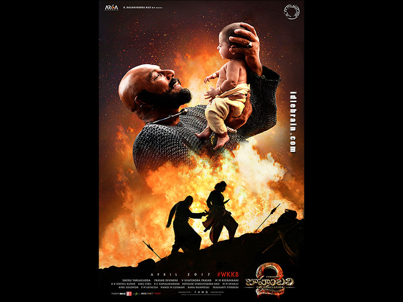
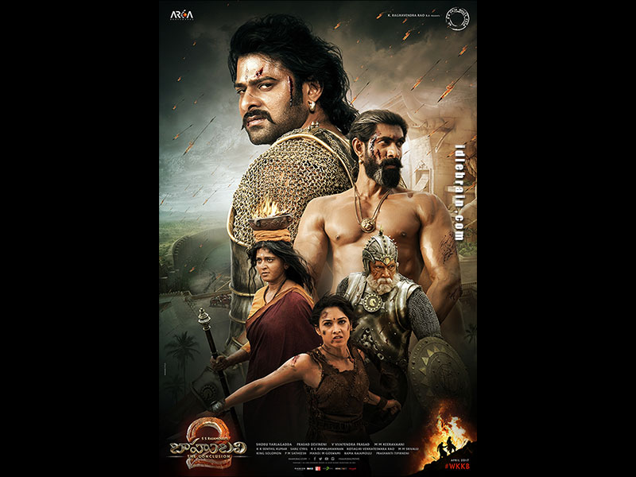
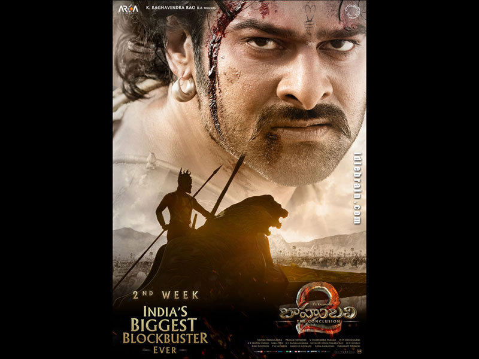
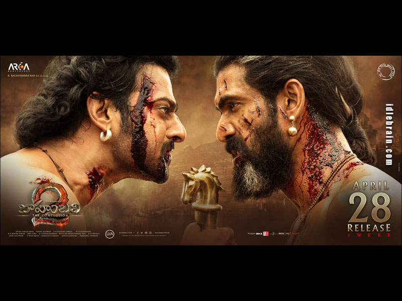

Baahubali 2 the conclusion


-
ABOUT
-
Released date: 28 April 2017 (India)
-
Director: S. S. Rajamouli
-
Budget: 250 crores INR (2017)
-
Production company: Arka Media Works
-
Producers: Shobu Yarlagadda, Prasad Devineni, Kovelamudi Raghavendra Rao
Introduction to The Story
Wondering why the whole of India, and many other parts of the world have gone
crazy about the launch of Baahubali 2 trailer? Do you feel left out when ‘Why
Kattappa Killed Baahubali’ jokes are cracked around you and memes invoking the
two land on your social media? Have you heard of SS Rajamouli’s Baahubali franchise
but can’t figure out the adjectives it comes attached with? You have seen Prabhas
and Rana Daggubati’s ferocious transformation for Baahubali 2 and are non-plussed?
Wondering why people have already marked April 28, 2017, Baahubali 2’s release date,
in their calendars? Here are all the answers to Who is Baahubali and why Baahubali 2 is
such a big deal.
The story
The Kingdom of Mahishmati is ruled by queen Sivagami (Ramya) who is married to Bijjaladeva (Nassar).
She takes charge of the kingdom when Amarendra Baahubali’s (Prabhas) mother passes away during labour.
She takes care of Amarendra like her own son and ensures that he is brought up with the ability to rule
the kingdom one day. Amarendra Baahubali also has a cousin brother Bhallala Deva (Rana Daggubati) who
is Sivagami’s son by blood. With two sons and one kingdom to rule, Sivagami decides to test both her
sons. She challenges them to win the upcoming war against the Kalakeyas and promises that whoever is
victorious will be crowned the king.
Meanwhile, Kuntala is attacked by Pindaris, a dacoit-like army. Amarendra, with the help of Kattappa,
Devasena's maternal cousin, Kumara Varma, is able to nullify the attack and save Kuntala. Upon being
questioned, Amarendra reveals his true identity. He receives a bird post from Mahishmati, ordering
him to take Devasena as captive. He promises Devasena that he will protect her honour and convinces
her to come with him to Mahishmati as his future bride.
Bijjaladeva convinces Kumara Varma that Bhallaladeva is after Amarendra's life and he must kill the
king to safeguard his brother-in-law. Kumara Varma enters the palace in the stealth of the night,only
to be discovered by Bhallaladeva and be killed, but not before revealing their plot to convince Sivagami
to kill Amarendra due to the people's continuing respect for him. Sivagami, convinced that Bhallaladeva's
life is under threat but that open hostility would result in civil war, orders Kattappa to assassinate
Amarendra. Kattappa, bound by his word to serve the Queen, lures Amarendra by feigning he is in trouble,
and then stabs him in the back and kills him.
After Amarendra's death, Kattappa soon learns of Bhallaladeva's treachery and informs Sivagami, who reveals
to the panicked hordes outside her palace that Amarendra is dead and that the baby Mahendra Baahubali would
ascend the throne. As Bhallaladeva and his men are about to seize the queen, she flees with the new King but
falls into a river after being hit by an arrow shot by Bhallaladeva. Bhallaladeva becomes a tyrannical emperor
who holds Devasena prisoner for the next 25 years and destroys Kuntala, Mahendra ends up in alliance with the
rebels who try to rescue her.
Climax
After listening to the whole story, Mahendra Baahubali (alias Shivudu / Shiva) immediately declares war.
He assembles the rebel army, consisting of villagers and scattered soldiers. With Kattappa's and Avantika's
assistance, the army lays siege to Mahishmati. Bhallaladeva recaptures Devasena, but Kattappa, Mahendra,
and the rebels breach the city walls and save her. Mahendra fights his uncle and pins him down using the
chains from Devasena's cage. After completing a cleansing ritual Devasena burns Bhallaladeva on a pyre,
ending his reign permanently.
The next day, Mahendra is crowned as the new king of Mahishmati with Avantika as his queen. He declares
Mahishmati will be dedicated to upholding peace and justice under his leadership. He also orders his men
to toss the head of Bhallaladeva's statue out of the palace walls, where it is swept to the great waterfall.It
breaks as it falls and crashes against the cliff's walls and lands near the lingam that Mahendra carried earlier.


THE END........